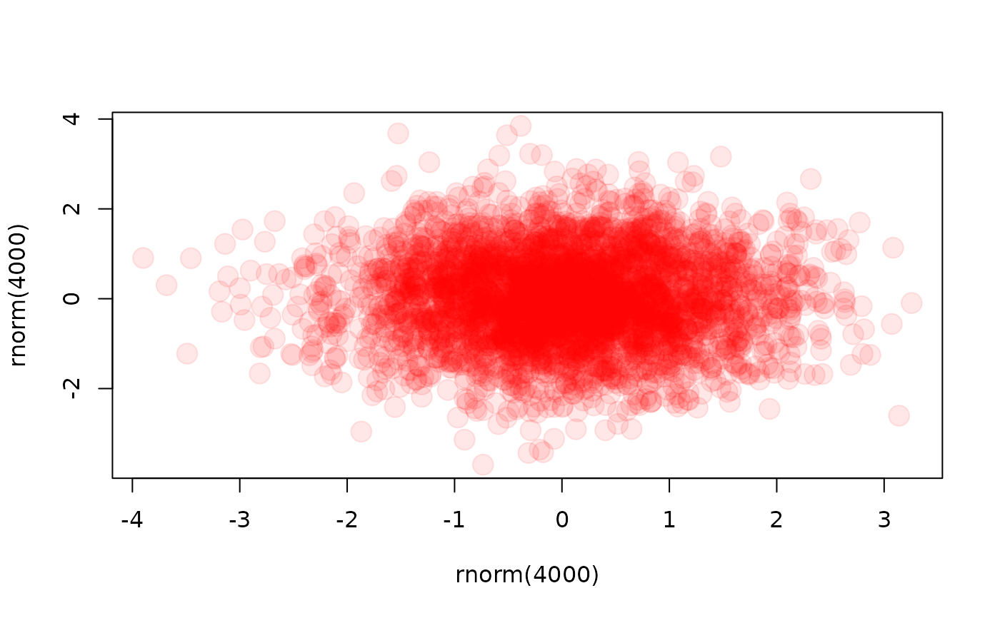

Cairo wrapper function returning NULL if not type is specified
Usage
openGraphCairo(
width = 640,
height = 480,
fileName = NULL,
type = NULL,
fileDirectory = getwd(),
pointsize = 12,
bg = "transparent",
canvas = "white",
units = "px",
dpi = 150
)Arguments
- width
see
Cairo()- height
see
Cairo()- fileName
name of file to be created. Does not include both file extension ".
type" and filefiledirectory. Default file name "visstat_plot".- type
Supported output types are "png", "jpeg", "pdf", "svg", "ps" and "tiff". See
Cairo()- fileDirectory
path of directory, where plot is stored. Default current working directory.
- pointsize
see
Cairo()- bg
see
Cairo()- canvas
see
Cairo()- units
see
Cairo()- dpi
DPI used for the conversion of units to pixels. Default value 150.
Details
openGraphCairo() Cairo() wrapper function. Differences to Cairo:
a) prematurely ends the function call to Cairo() returning NULL, if no output type of types "png", "jpeg", "pdf", "svg", "ps" or "tiff"
is provided.
b)
The file argument of the underlying Cairo function is generated by file.path(fileDirectory,paste(fileName,".", type, sep = "")).
Examples
## adapted from example in \code{Cairo()}
openGraphCairo(fileName = "normal_dist", type = "pdf", fileDirectory = tempdir())
plot(rnorm(4000), rnorm(4000), col = "#ff000018", pch = 19, cex = 2)

dev.off() # creates a file "normal_dist.pdf" in the directory specified in fileDirectory
#> agg_png
#> 2
# ## remove the plot from fileDirectory
file.remove(file.path(tempdir(), "normal_dist.pdf"))
#> [1] TRUE